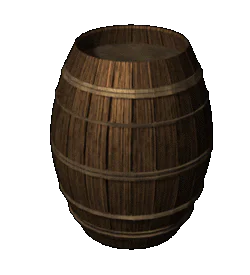

 |
Обработка дерева |
|
Основным поделочным материалом в Древней Руси оставалось дерево. Для различных потребностей использовали древесину 27 (!) различных пород. Самыми распространенными видами древесины были сосна и ель. Из них строили дома, городские укрепления, мостовые улиц, водопроводы, корабли, станки, мебель, ремесленные приспособления и многое другое. Древесину лиственных пород применяли главным образом для изготовления бытовых вещей. Из дуба делали бочки, кадки, ведра и другую посуду, а также полозья саней. Ложки делали из клена. Основными деревообрабатывающими инструментами были топоры, секачи и тесла, пилы и сверла, рубанки, скобели и стамески. Одной из древнейших отраслей древнерусской промышленности было токарное дело. На токарных станках изготавливали десятки видов посуды, веретена, большое количество изделий из кости. Начиная с X века на Руси основным видом деревообрабатывающего инструмента стали резцы. |
|
Текст и
иллюстрации (c) 1997 Snowball Interactive Entertainment, Inc. |